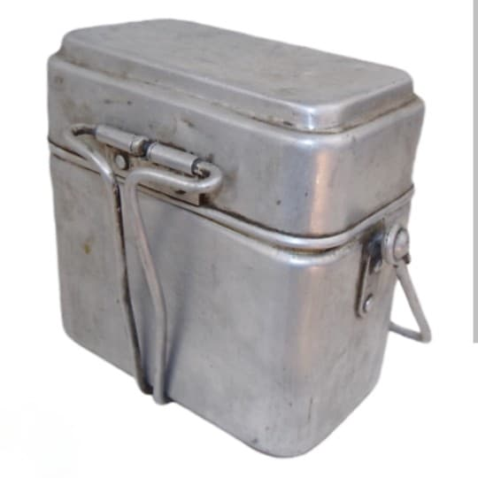
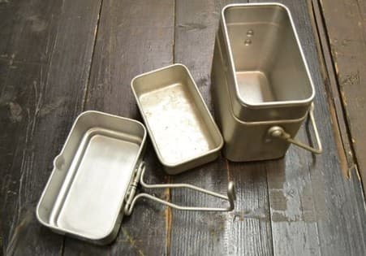

La gamelle Modèle 1935 est un équipement essentiel du fantassin français durant la Seconde Guerre mondiale. Robuste, légère et polyvalente, elle permet au soldat de cuire, transporter et consommer ses repas sur le terrain.
Utilisée massivement en 1939–1940, elle accompagne également certaines unités de la France Libre. Sa conception simple mais efficace en fait un objet emblématique du matériel individuel français.


Introduite en 1935, cette gamelle équipe les soldats français durant la mobilisation de 1939–1940. Sa conception en aluminium permet une grande légèreté tout en restant suffisamment résistante pour supporter les conditions du front.
Elle est également utilisée dans les unités de la France Libre, notamment en Afrique du Nord et au Levant.